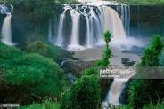

Top three beautifull places to visit

Blue Nile river
longest river in Africa found 30 minutes away from Bahir Dar
Lake Tana
largest lake in Ethiopia and the source of Blue Nile founds in the city center of Bahir Dar
longest river in Africa found 30 minutes away from Bahir Dar
largest lake in Ethiopia and the source of Blue Nile founds in the city center of Bahir Dar

"I have lived at Bahir Dar for 13 years, so I can show you all of its best parts and hidden secrets."